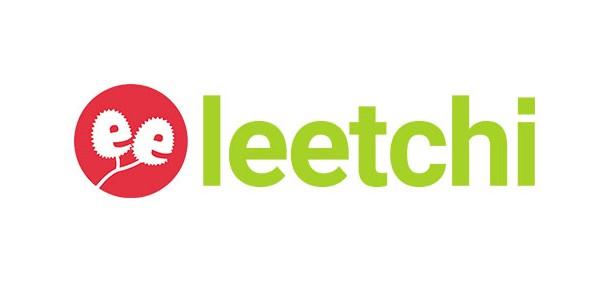
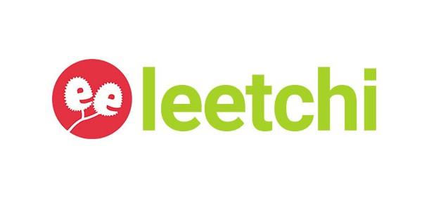

Faites un don

Faites un don

Notre association à besoin de fonds pour régler un avocat.
Protéger une zone de prairies humides en s'opposant à la construction d'un projet semi-industriel sur des terres irriguées riches en biodiversités à quelques pas de plusieurs établissements scolaires et crèches.
Collectif et association de riverains, nous nous mobilisons contre le projet du Grand Avignon de construire sur 16 000 m2 de terrain une déchèterie dans le quartier d’Agroparc à Montfavet.
Sur la parcelle concernée se trouvent le canal tricentenaire de Crillon, le canal de Montfavet, ainsi qu’une faune et une flore caractéristiques des prairies humides, dont le papillon Diane.
Les décideurs de ce projet n’ont prêté pas prêté l’attention adéquate au cadre de vie écologique, et s’apprêtent à bétonner des terres agricoles irrigables, inondant de surcroît le quartier d’une circulation de camions et remorques délétère pour tous.
Nous appelons aux dons, afin de faire barrage par voie juridique à cette aberration, et de préserver le patrimoine naturel dont les futures générations ont le droit d’hériter.
Ces dons financeront les frais d’avocat ainsi que les études naturalistes sur cette parcelle sur laquelle vivent des espèces d’intérêt majeur au plan ornithologique et entomologique.
Nous vous remercions vivement pour votre soutien!
L’association Zone À Protéger d’Agroparc
Vous pouvez nous contacter à : zapagroparc@gmail.com